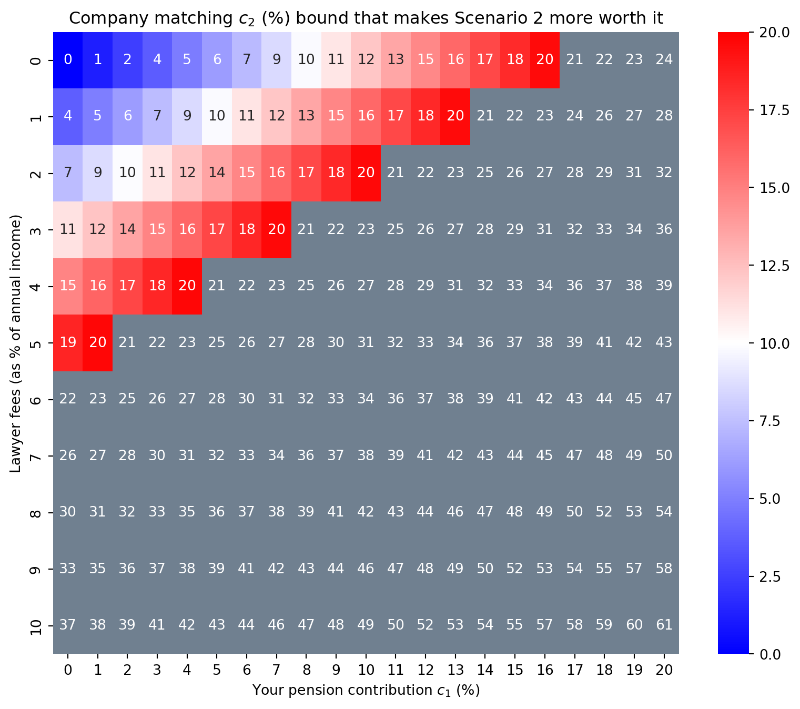

I am not a financial adviser. This is not financial advice. I don’t represent my company.
The universal question that I get from friends and colleagues alike is whether we should contribute into pension as a migrant. This stems from the fact that some of us are not staying in this country forever depending on one’s personal goals; which makes sense. There’s a branching question on how to move pensions if one were to contribute to a private pension facility here in the UK such as using a QROPS, but that will not be the scope of this post.
Well, what makes contributing into pension attractive as a migrant? After all, you’re chopping off money that you won’t have access to for a long time – unless you want to pay a penalty – and putting it into a pot that can go both up and down. Not to mention that there are management fees that comes with using this pot. Parking your money in a pot in a country that you have minimal ties to past your working residency is just horrifying to hear. Plus, when you reach pension age, you still have to pay income tax when taking out your pension money assuming it goes above the personal allowance at that time. Otoh, if you were to take this money straight out of PAYE, you would have to pay income taxes on it today; and we all know UK taxes are huge at 20%, 40% and even 45%. This begs the question, are we just in a limbo? Surely given a binary decision, one should be marginally better?
Well you would be pleased to here that the answer to that question is a positive. There is something that makes contribution to pension marginally better and that is if your company matches your pension contribution. We shall refer to this phenomenon as pension matching from now on.
Depending on your employer, this matching figure can go to wildly high numbers. The government state pension matching goes beyond 30% for example (though this comes at a significantly lower base pay). Some companies do a 6% matching to 3%. I’ve even heard a 10% matching to 1%. But I’ve also heard smaller firms do half matches such as a 2% matching to 4%; and that is just sad to hear. Regardless, these are tax-free boosters to your income though they are only accessible when you reach pension age. I mean if your annual income is X, then a 10% matching puts your income to 1.1X which is a huge boost to be fair.
But let’s not move away from the main premise. I want to find precise evidence that pension matching is a viable tradeoff for migrants. Naturally, these are tax-free boosters but let’s not forget the fact that you wouldn’t be able to access this money for at least 30 years and they can go both up and/or down. For me, this begs the question, what if we look at the extreme case: what if I put money into pension, get pension matching, but then decide to take out my money before pension age and pay the HMRC penalty of 55%? Would pension matching still be worth it? Or is one better off just pay PAYE tax and getting quick cash that can be used to invest in other asset classes considering one might not be staying long in the UK?
To answer this question, we focus on the pension matching coefficient because only that gives the edge for pension matching. Let’s make this precise.
Let X be our anual income, and fix c_1 to be your pension contribution percentage and c_2 to be your company matching contribution percentage, i.e., your pension matching coefficient.
Now, tax is progressively paid but we only want to focus on extremes so put m to be your maximal tax percentage – maximal in the sense of which tax bracket you are in – and let e be the early pension withdrawal tax percentage, i.e., your penalty for taking out your pension before of age. As of 2025, this is 55%. I also just learnt that apparently it is not straightforward to take out your pension early so you might need to get a lawyer which would cost \ell.
So now we have two scenarios:
- Put in pension, get company matching, and perform early withdrawal.
- Take out money via PAYE and pay maximal bracket income tax.
Scenario 1
Suppose you were to put money into your pension and do an early withdrawal.
Your pension contribution amounts to (c_1+c_2)X. If your perform an early withdrawal, this reduces to (1 - e)(c_1+c_2)X but remember we have to pay lawyer fees so it actually becomes (1 - e)(c_1+c_2)X - \ell. Now, I’m not sure if the early withdrawal amount will be slapped with a further income tax – but knowing the UK, I think it will, so let’s represent this possible income tax with \tau. Thus, the amount of money we would obtain annually is P_1 = (1 - e)(c_1+c_2)X\tau - \ell.
Scenario 2
Otoh, suppose you decide to not contribute to pension at and lose the company match but obtain quick cash. You would have gain P_2 = (1-m)c_1 X at the end of each financial year. No lawyer fees, no extra complication.
The c_2 criterion
Now we can quantify the difference here or look at ratios. But if you were to plug in real numbers from your income, you might have seen that Scenario 1 actually leads you to more income in the long run which is quite a revelation considering you are already paying for the 55% early withdrawal tax!
So the next question is when does this result gets overturned? In other words, when is P_2 \geqslant P_1? Thankfully this is fairly straightforward maths, you just have to be careful when dividing by possible negatives. We obtain the following bound.
Notice that there are two terms in the bound where one is on c_1 and the other is on the lawyer fees. Let’s analyse this criterion further.
From now on, I am going to assume that we are going to pay the maximal tax bracket on the early-withdrawn pension. That means that we put \tau = 1-m. This aligns with our spirit of analysing for the extreme case (since the alternative \tau = 1 is that we are not taxed on the already early-withdrawn-taxed pension amount).
Outcome 1: 6% contribution. No lawyers involved
Suppose you don’t get lawyers involved and suppose you pay the maximal tax bracket on the early-withdrawn pension. Then the criterion simplifies to:
c_2 \leqslant c_1 \left[ \frac{1-m}{(1-e)(1-m)} - 1 \right] + 0 = c_1 \frac{e}{1-e}.
So if you were to contribute c_1 = 6\% of your salary and the early withdrawal tax is at e = 55\%, then it only make sense to pursue Scenario 2 iff
c_2 \leqslant 0.06 \frac{0.55}{1-0.55} = 0.073.
That is, if you were to contribute 6% of your salary, it only makes sense to take advantage of pension matching and do early withdrawal if and only if your company is matching contribution at 7.3% or more!
This is a staggering find! It means even if your pension matching coefficient is more than your contribution, it is still possible that it’s more worth it to just grab that quick cash and pay income tax on it!
Outcome 2: 6% contribution. Lawyers charge you 1% of your annual income
In this case, we have \ell = 0.01X which simplifies our criterion to:
c_2 \leqslant c_1 \left[ \frac{1-m}{(1-e)(1-m)} - 1 \right] + \frac{0.01}{(1-e)(1-m)} = c_1 \frac{e}{1-e} + \frac{0.01}{(1-e)(1-m)}.
In this case, if you were to contribute 6% of your salary, it only makes sense to pursue Scenario 2 iff your company is matching contribution at 11% or more:
c2 \leqslant 0.06 \frac{0.55}{1-0.55} + \frac{0.01}{(1-0.55)(1-0.4)} = 0.11.
From 7.3% to 11%. That scaled up quite fast!
A general outcome of c_1 versus lawyer fees
There’s nothing special about pension contribution being at 6%. To look at the general case, we plot a heatmap of c_1 versus \ell as a percent of annual income. We consider c_1 to range from 0 to 20 percent and lawyer fees to range from 0 to 10 percent and see how these values affect the c_2 criterion. In the heatmap, we mark high values of c_2 up to 20% by red to acknowledge that this is the boundary that corporations can go up to, and anything beyond by gray.
Code
import numpy as np
import matplotlib.pyplot as plt
import seaborn as sns
X = 100_000
e = 0.55
m = 0.4
c1s = np.arange(0, 21)/ 100 # c1
ys_perc = np.arange(0, 11)/100
ys = ys_perc*X # lawyer fees
XS, YS = np.meshgrid(c1s, ys)
def c2_crit(c1, m, e, t, l, X):
return c1*((1-m)/((1-e)*t)-1) + l/(1-e)/t/X
Z = c2_crit(c1=XS, m=m, e=e, t=1-m, l=YS , X=X)
# Create the heatmap
plt.figure(figsize=(10, 8))
# Create a custom colormap
# Values <= 0.20 will use bwr colormap
# Values > 0.20 will be slategray
custom_cmap = plt.cm.bwr.copy()
custom_cmap.set_over('slategray')
vmax = 20
sns.heatmap(Z*100,
xticklabels=[f"{val*100:.0f}" for val in c1s],
yticklabels=[f"{val*100:.0f}" for val in ys_perc],
cmap=custom_cmap, # You can change the colormap
annot=True, # Show values in cells
fmt='.0f',
vmax=vmax)
plt.title('Company matching $c_2$ bound that makes Scenario 2 more worth it')
plt.xlabel('Your pension contribution $c_1$ (%)')
plt.ylabel('Lawyer fees (as % of annual income)')
plt.show()
In the heatmap, we can see the outcomes of 7 and 11 percent in c_2 that we have computed before with c_1 = 0.06 and \ell being 0 and 1 percent of your annual income respectively. In general, for low lawyer fees < 2%, we see that the criterion is obeyed with relatively sensible c_1 versus c_2 values. For example, at \ell = 0.01X and c_1 = 10\%, Scenario 2 is only worth it iff c_2 \leqslant 16\%.
However, the tradeoff becomes worse quite fast. At 5% (of annual income) lawyer fees, the only sensible company matching is very high and it is unlikely you would find companies that are willing to match these values. In these cases, it is much worth it to grab that quick cash and pay income tax.
So what’s the verdict? Well it’s up to you. We’ve done the maths and crunched the numbers. If you find that your company is matching well outside the range of the c_2 criterion with your pension contribution of c_1, then maybe it’s more sensible to just put your money in pension and get that extra tax-free booster. Sure, you’ll get the money at pension age, and you might not even live to see that money, but the hedging still makes sense especially if you can work out a will for your future generation. Plus, do you really need that excess money today anyways? I would personally rather focus on reworking my personal finance to fit the post-taxed post-pension-sacrificed money.